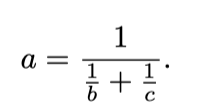
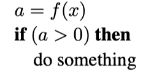

前言
本版本的《计算机图形学基础》包括对阴影着色、光线反射和路径追踪等材料的大量重写，以及对全书的许多校正。本书对基于物理的材料和基于物理的渲染等技术进行了更好的介绍，这些技术在实际应用中逐渐占据主导地位。现在这些材料得到更好的整合，我们认为这本书很好地匹配了目前许多教师组织图形课程的方式。
本书的组织结构与第四版基本相似。在多年来对本书进行修订的过程中，我们努力保留了早期版本中非正式的、直观的表述风格，同时也提高了本书的一致性、准确性和完整性。我们希望读者会发现，这本书是一个吸引人的平台，适合于各种计算机图形学课程。
关于封面
封面图片来自 J.W.Baker 的《水中之虎》（画布上的拉丝和喷枪亚克力，16英寸×20英寸），www.jwbart.com。
老虎的主题是指 Alain Fournier（1943-2000）1998年在康奈尔大学的一次研讨会上的精彩演讲。他的演讲是对老虎动作进行的令人回味的口头描述。他总结了自己的观点：
尽管在过去的35年里，计算机图形学的建模和渲染已经有了巨大的进展，但我们仍然无法自动模拟在河中游泳的老虎的所有精彩细节。我所说的自动是指不需要艺术家或专家进行仔细的手动调整的方式。
坏消息是，我们还有很长的路没走。
好消息是，我们还有很长的路要走。
在线资源
本书的网址是 http://www.cs.cornell.edu/~srm/fcg5/ 。我们将继续维护本书的勘误表和课程链接，以及与本书风格相符的教学材料。本书中的大多数图片都是 Adobe Illustrator 格式的，我们很乐意根据需要将特定图片转换为可移植格式。请随时通过 srm@cs.cornell.edu 或 ptrshrl@gmail.com 与我们联系。
致谢
以下人士提供了本书各版本的有用信息、评论或者反馈：Ahmet O˘guz Aky¨uz, Josh Andersen, Beatriz Trinch˜ao Andrade Zeferino Andrade, Bagossy Attila, Kavita Bala, Mick Beaver, Robert Belleman, Adam Berger, Adeel Bhutta, Solomon Boulos, Stephen Chenney, Michael Coblenz, Greg Coombe, Frederic Cremer, Brian Curtin, Dave Edwards, Jonathon Evans, Karen Feinauer, Claude Fuhrer, Yotam Gingold, Amy Gooch, Eungyoung Han, Chuck Hansen, Andy Hanson, Razen Al Harbi, Dave Hart, John Hart, Yong Huang, John “Spike” Hughes, Helen Hu, Vicki Interrante, Wenzel Jakob, Doug James, Henrik Wann Jensen, Shi Jin, Mark Johnson, Ray Jones, Revant Kapoor, Kristin Kerr, Erum Arif Khan, Mark Kilgard, Fangjun Kuang, Dylan Lacewell, Mathias Lang, Philippe Laval, Joshua Levine, Marc Levoy, Howard Lo, Joann Luu, Mauricio Maurer, Andrew Medlin, Ron Metoyer, Keith Morley, Eric Mortensen, Koji Nakamaru, Micah Neilson, Blake Nelson, Michael Nikelsky, James O’Brien, Hongshu Pan , Steve Parker, Sumanta Pattanaik, Matt Pharr, Ken Phillis Jr, Nicol`o Pinciroli, Peter Poulos, Shaun Ramsey, Rich Riesenfeld, Nate Robins, Nan Schaller, Chris Schryvers, Tom Sederberg, Richard Sharp, Sarah Shirley, Peter-Pike Sloan, Hannah Story, Tony Tahbaz, JanPhillip Tiesel, Bruce Walter, Alex Williams, Amy Williams, Chris Wyman, Kate Zebrose, and Angela Zhang。
Ching-Kuang Shene 和 David Solomon 允许我们借用他们的例子。 Henrik Wann Jensen、Eric Levin、Matt Pharr 和 Jason Waltman 慷慨地提供了图片。 Brandon Mansfield 帮助改进了关于光线追踪的分层包围体的探讨。 Philip Greenspun (philip.greenspun.com) 热心地允许我们使用他的照片。 John “Spike” Hughes 帮助改进了对抽样理论的探讨。 Wenzel Jakob 的 Mitsuba 渲染器在创建许多图形方面非常宝贵。我们非常感谢 J.W. Baker 帮助创作了 Pete 设想的封面。他除了是一位才华横溢的艺术家之外，也是一位非常愉快的工作伙伴。
本书的章节注释中引用了许对编写本书有帮助的著作。然而，有几本影响了本书内容和表现形式的关键文献值得在此特别表彰。其中包括两本经典的计算机图形学教材，我们都是从这两本教材中学习的基础知识——《计算机图形学：原理与实践》（Foley、Van Dam、Feiner 和 Hughes，1990 年）和《计算机图形学》（Hearn 和 Baker，1986 年）。其他文本包括 Alan Watt 的两本有影响力的书籍 (Watt, 1993, 1991), Hill的《使用OpenGL的计算机图形》(Francis S. Hill, 2000), Angel的《交互式计算机图形学：使用 OpenGL 的自上而下方法》(Angel, 2002), Hugues Hoppe 的华盛顿大学论文 (Hoppe, 1994) 和 Rogers 的两篇优秀的图形学文章 (D. F. Rogers, 1985, 1989)。
我们要特别感谢 Alice 和 Klaus Peters 鼓励 Pete 撰写本书的第一版，感谢他们在帮助完成本书制作的伟大才能。他们对作者的耐心以及竭尽所能奉献于使本书成为最好的书籍，这对本书的出版起了重要的作用。如果没有他们的非凡努力，这本书肯定不会存在。
Steve Marschner，伊萨卡，纽约
Peter Shirley，盐湖城，犹他州
2021年2月
作者
Steve Marschner是康奈尔大学的计算机科学教授。他于1993年在布朗大学获得理学学士学位，1998年在康奈尔大学获得博士学位。在2002年加入康奈尔大学之前，他在微软研究院和斯坦福大学担任研究职务。他是2015年SIGGRAPH计算机图形学成就奖的获得者和2003年技术学院奖的共同获得者。
Peter Shirley是英伟达公司的杰出研究科学家。他曾在印第安纳大学、康奈尔大学和犹他大学担任学术职务。他于1985年获得里德学院的物理学学士学位，1991年获得伊利诺伊大学的计算机科学博士学位。
介绍
计算机图形学这个术语描述了任何使用计算机来创建和操纵图像的情况。本书介绍了可用于创建各种图像的算法和数学工具——逼真的视觉效果、内容丰富的技术插图或精美的计算机动画。图形可以是二维的，也可以是三维的；图像可以是完全合成的，也可以是通过处理照片产生的。本书是关于基本算法和数学的，特别是那些用于制作三维物体和场景的合成图像的算法。
实际上，做计算机图形不可避免地需要了解特定的硬件、文件格式，通常还需要一个或两个图形API（参见1.3节）。计算机图形学是一个快速发展的领域，因此这些知识的具体内容是在不断更新变化。因此，在本书中，我们尽力避免依赖任何特定的硬件或API。我们鼓励读者用他们的软件和硬件环境的相关文档来补充此文本。幸运的是，计算机图形文化有足够的标准术语和概念，本书的讨论应能很好地反映到大多数环境。
本章定义了一些基本术语，并提供了一些历史背景，以及与计算机图形相关的信息来源。
图形学领域
对任何领域强加分类都是危险的，但大多数图形从业者会对计算机图形的以下主要领域达成一致:
- 建模涉及的是形状和外观属性的数学规范化，这种方式可以存储在计算机上。例如，可以将咖啡杯描述为一组有序的三维点，以及一些连接这些点的插值规则和一个描述光线如何与杯子作用的反射模型。
- 渲染是一个从艺术中继承下来的术语，涉及到从三维计算机模型创建阴影图像。
- 动画是一种通过图像序列创造运动幻觉的技术。动画使用建模和渲染，但增加了随着时间移动的关键问题，这在基本的建模和渲染中通常无法处理。
还有许多其他涉及计算机图形的领域，关于它们是否属于图形学的核心领域，仁者见仁，智者见智。这些内容在本书都至少有所提及。此类相关领域包括以下内容：
- 用户接口涉及输入设备，例如鼠标和平板电脑、应用程序、图像对用户的反馈以及其他感官反馈的接口。从历史上看，该领域与图形有关，主要是因为计算机图形的研究人员最早接触到了现在无处不在的输入和输出设备。
- 虚拟现实试图让用户沉浸在一个三维虚拟世界中。这通常要求至少有立体图形和对头部运动的反应。对于真正的虚拟现实，还应该提供声音和力量的反馈。因为这一领域需要先进的三维图形和先进的显示技术，所以它通常与图形学密切相关。
- 可视化试图通过视觉显示让用户深入了解复杂的信息。通常，在一个可视化问题中，有一些图形问题需要解决。
- 图像处理涉及对二维图像的操作，在图形和视觉领域均有应用。
- 三维扫描使用测距技术来创建被评估的三维模型。这类模型对于创造丰富的视觉图像很有帮助，而处理这种模型往往需要图形算法。
- 计算摄影是使用计算机图形、计算机视觉和图像处理方法，以实现拍摄物体、场景和环境的新方法。
主要应用
几乎任何工作都可以在一定程度上使用计算机图形，但计算机图形技术的主要消费者包括以下行业：
- 视频游戏越来越多地使用复杂的三维模型和渲染算法。
- 卡通片通常是直接由三维模型渲染。许多传统的二维卡通片使用由三维模型的背景渲染，这使得连续移动的视角不需要大量花费艺术家时间。
- 视觉效果几乎使用了所有类型的计算机图形技术。几乎每部现代电影都使用数字合成技术，将背景与单独拍摄的前景叠加。许多电影还使用三维建模和动画来创造合成环境、物体甚至人物，而大多数观众都不会怀疑这不是真的。
- 动画片使用了许多与视觉效果相同的技术，但不一定要追求图像的真实性。
- CAD/CAM是指计算机辅助设计和计算机辅助制造。这些领域利用计算机技术在计算机上设计零件和产品，然后利用这些虚拟设计来指导制造过程。例如，许多机械零件是在三维计算机建模软件包中设计的，然后在计算机控制的铣削设备上自动生产。
- 仿真可以被认为是精确的视频游戏。例如，飞行模拟器使用复杂的三维图形来模拟驾驶飞机的体验。这样的模拟对于安全关键领域的初始培训，例如驾驶汽车，以及对于有经验的用户的场景培训都是非常有用的，如在实际操作中成本太高或太危险的特定灭火情况。
- 医学影像为扫描的病人数据创建有意义的图像。例如，计算机断层扫描（CT）数据集是由密度值的大型三维矩形阵列组成。计算机图形被用来创建阴影图像，帮助医生从这些数据中提取最突出的信息。
- 信息可视化创造的数据图像不一定具有“自然”的视觉描述。例如，十只不同股票价格的时间趋势没有明显的视觉描述，但巧妙的图形技术可以帮助人类看到这些数据的模式。
图形API
使用图形库的一个关键部分是处理图形API。应用程序接口（API）是执行一系列相关操作的标准函数集合，而图形API是执行如将图像和三维表面绘制到屏幕上的窗口等基本操作的函数集合。
每个图形程序都需要能够使用两个相关的API：一个图形API用于视觉输出，一个用户界面API用于从用户那里获得输入。目前有两种主流的图形和用户界面API范式。第一种是集成的方法，以Java为例，其中图形和用户界面工具包是集成的、可移植的包，作为语言的一部分得到完全的标准化和支持。第二种是以Direct3D和OpenGL为代表的，其中绘图命令是与C++等语言相联系的软件库的一部分，而用户界面软件是一个独立的实体，可能因系统而异。在后一种方法中，编写可移植的代码是有问题的，尽管对于简单的程序，可能会使用可移植的库层来封装系统特定的用户界面代码。
无论你选择什么样的API，基本的图形调用将大致相同，而且本书的概念也适用。
图形管道
现在的每台台式电脑都有一个强大的三维图形管道。这是一个特殊的软件/硬件子系统，可以有效地绘制透视的三维图元。通常，这些系统针对处理具有共享顶点的三维三角形进行了优化。管道中的基本操作是将三维顶点位置映射到二维屏幕位置，并对三角形进行着色，以使它们看起来既逼真又以适当的从后到前（back-to-front）的顺序出现。
尽管按照有效的从后到前顺序绘制三角形曾经是计算机图形学中最重要的研究问题，但现在几乎都是用z-buffer来解决，它使用一个特殊的内存缓冲区，以蛮力的方式解决问题。
事实证明，图形管道中使用的几何操作几乎可以完全在四维坐标空间中完成，该空间由三个传统的几何坐标和第四个有助于透视的齐次坐标组成。这些四维坐标是用4×4矩阵和4矢量来操作的。因此，图形管道包含了许多有效处理和合成这些矩阵和矢量的机制。这种四维坐标系是计算机科学中最微妙和美丽的结构之一，无疑也是学习计算机图形学时需要跨越的最大智力障碍。每本图形学书籍的第一部分都有很大一部分是关于这些坐标的。
生成图像的速度在很大程度上取决于绘制三角形的数量。因为在许多应用中，交互性比视觉质量更重要，所以尽量减少用于表示模型的三角形数量是值得的。此外，如果从远处看模型，需要的三角形数量比从近处看模型时少。这表明，使用不同的细节级别（LOD）来表示一个模型是很有用的。
数值问题
许多图形程序实际上只是三维数字代码。数字问题在这类程序中往往是至关重要的。在 "过去"，要以稳健和可移植的方式处理这些问题是非常困难的，因为机器对数字有不同的内部表示，更糟糕的是，处理异常的方式也不尽相同，互不兼容。幸运的是，几乎所有的现代计算机都符合IEEE浮点数标准（IEEE标准协会，1985）。这允许程序员对处理某些数字条件做出许多方便的假设。
尽管IEEE浮点数具有很多在编码数值算法时很有价值的特性，但对于图形中遇到的大多数情况只有少数几个特性是至关重要的。首先，也是最重要的是要了解IEEE浮点数运算中实数的三个"特殊 "值。
- 正无穷（∞）。这是一个比其他所有有效数字都大的有效数字。
- 负无穷（-∞）。这是一个比其他所有有效数字都小的有效数字。
- 非数字（NaN）。这是一个无效的数字，是由一个具有不确定后果的操作产生的，如0除以0。
IEEE浮点数的设计者做出了一些对程序员来说非常方便的决定。其中许多与上述三个处理异常的特殊值有关，比如除以零。在这些情况下，异常会被记录下来，但在很多情况下，程序员可以忽略它。具体来说，对于任何正实数a，以下涉及除以无穷数的规则都是成立的：
+a/(+∞) = +0,
−a/(+∞) = −0,
+a/(−∞) = −0,
−a/(−∞) = +0.
其他涉及无穷数的运算的行为与人们所期望的一样。同样对于正a，其行为如下：
∞ + ∞ = +∞,
∞ − ∞ = NaN,
∞ × ∞ = ∞,
∞/∞ = NaN,
∞/a = ∞,
∞/0 = ∞,
0/0 = NaN.
布尔表达式中涉及无穷数的规则与预期一致：
- 所有有限的有效数字都小于+∞。
- 所有有限的有效数字都大于-∞。
- -∞小于+∞。
涉及NaN值的表达式规则比较简单：
- 任何包括NaN的算术表达式的结果都是NaN。
- 任何涉及NaN的布尔表达式都是假的。
也许IEEE浮点数最有用的地方在于如何处理除以零的问题；对于任何正实数a，以下涉及除以零值的规则都成立：
+a/ +0 = +∞,
−a/ +0 = −∞.
如果程序员使用IEEE规则，那么许多数字计算会变得更加简单。例如，考虑表达式：

这种表达方式出现在电阻和透镜上。如果除以0会导致程序崩溃（在IEEE浮点数之前的许多系统中都是如此），那么就需要两个if语句来检查b或c的小值或零值。相反，在IEEE浮点数中，如果b或c为零，我们会如愿获得a的零值。另一种避免特殊检查的常用技术是利用NaN的布尔特性。请看下面的代码段：

在这里，函数f可能会返回 "丑陋 "的值，如∞或NaN，但if条件仍然是明确的：当a=NaN或a=-∞时为假，a=+∞为真。在决定返回哪些值时要小心，通常if可以做出正确的选择，而不需要特别的检查。这使得程序更小、更健壮、更高效。
效率
并没有什么神奇的规则能够使代码更加高效。高效性是通过仔细的权衡来实现的，而这些权衡对于不同的架构是不同的。然而，在可预见的未来，一个好的启发式方法是，程序员应该更多地关注内存访问模式而不是操作数。这与20年前的最佳启发式方法相反。出现这种转变是因为内存的速度没有跟上处理器的速度。由于这一趋势仍在继续，有限和连贯（一致）的内存访问对优化的重要性应该只会增加。
一个合理的使代码快速化的方法是按以下顺序进行，只采取那些需要的步骤：
- 尽可能以最直接的方式编写代码。根据需要即时计算中间结果而不是存储它们；
- 在优化模式下进行编译；
- 使用现有的任何分析工具来找到关键瓶颈；
- 检查数据结构以寻找改善局部性的方法。如果可能，使数据单元大小与目标架构上的缓存/页面大小相匹配；
- 如果分析揭示了数值计算的瓶颈，请检查编译器生成的汇编代码是否存在效率缺失。重写源代码以解决发现的任何问题。
在这些步骤中最重要的是第一个步骤。大多数的 "优化 "使代码更难读，但却没有加快速度。此外，前期花在优化代码上的时间通常更适合用来纠正错误或增加功能。另外，要注意旧文本中的建议；一些经典的技巧，如使用整数而不是实数，可能不再产生速度，因为现代的CPU通常在执行浮点数操作时像执行整数操作一样快。在所有情况下都应该进行分析，以确定任何优化对特定机器和编译器的好处。